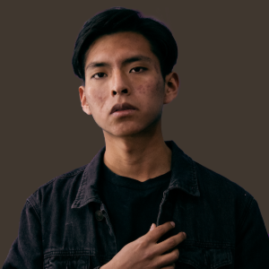

David Benjamin Simeon Mucha
Hello everyone, my name is Benjamin Simeon. I am passionate about art, photography, and painting. These creative outlets allow me to capture the beauty in everyday life, whether it's through the lens of a camera or a brush on canvas.
In my free time, I love immersing myself in these hobbies, but I also value spending quality moments with my loved ones. Just like art requires balance and harmony, I believe in balancing personal passions with time for family and friends.
Inspired by the thought that life is fleeting, I focus on enjoying every moment with those around me and expressing my appreciation for them. Through the principles of patience, understanding, and love, I aim to create deeper, more meaningful relationships, both in my art and in life.